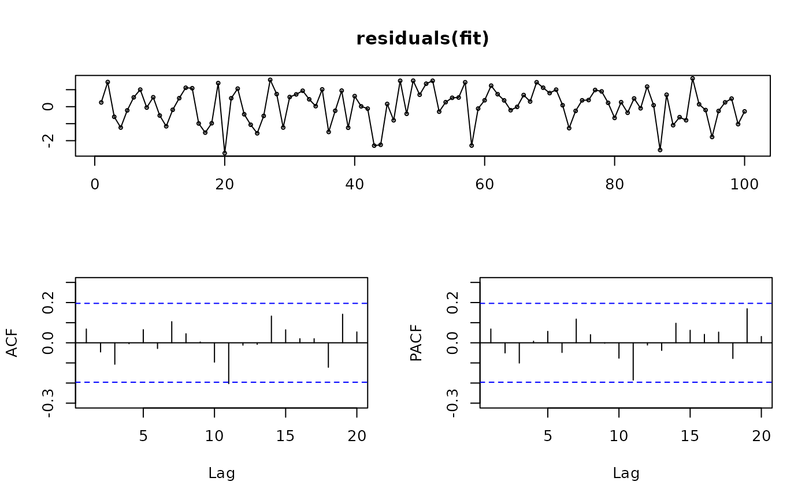

An ARFIMA(p,d,q) model is selected and estimated automatically using the Hyndman-Khandakar (2008) algorithm to select p and q and the Haslett and Raftery (1989) algorithm to estimate the parameters including d.
Arguments
- y
a numeric vector or univariate time series of class
ts- drange
Allowable values of d to be considered. Default of
c(0, 0.5)ensures a stationary model is returned.- estim
If
estim = "ls", then the ARMA parameters are calculated using the Haslett-Raftery algorithm. Ifestim = "mle", then the ARMA parameters are calculated using full MLE via thestats::arima()function.- model
Output from a previous call to
arfima. If model is passed, this same model is fitted to y without re-estimating any parameters.- lambda
Box-Cox transformation parameter. If
lambda = "auto", then a transformation is automatically selected usingBoxCox.lambda. The transformation is ignored if NULL. Otherwise, data transformed before model is estimated.- biasadj
Use adjusted back-transformed mean for Box-Cox transformations. If transformed data is used to produce forecasts and fitted values, a regular back transformation will result in median forecasts. If biasadj is
TRUE, an adjustment will be made to produce mean forecasts and fitted values.- xreg
Optionally, a numerical vector or matrix of external regressors, which must have the same number of rows as
y. It should not be a data frame.- x
Deprecated. Included for backwards compatibility.
- ...
Other arguments passed to
auto.arima()when selecting p and q.
Value
A list object of S3 class fracdiff, which is described in
the fracdiff::fracdiff() documentation. A few additional objects
are added to the list including x (the original time series), and the
residuals and fitted values.
Details
This function combines fracdiff::fracdiff() and
auto.arima() to automatically select and estimate an ARFIMA
model. The fractional differencing parameter is chosen first assuming an
ARFIMA(2,d,0) model. Then the data are fractionally differenced using the
estimated d and an ARMA model is selected for the resulting time series
using auto.arima(). Finally, the full ARFIMA(p,d,q) model is
re-estimated using fracdiff::fracdiff(). If estim = "mle",
the ARMA coefficients are refined using stats::arima().
References
J. Haslett and A. E. Raftery (1989) Space-time Modelling with Long-memory Dependence: Assessing Ireland's Wind Power Resource (with discussion); Applied Statistics 38, 1-50.
Hyndman, R.J. and Khandakar, Y. (2008) "Automatic time series forecasting: The forecast package for R", Journal of Statistical Software, 26(3).
Examples
library(fracdiff)
x <- fracdiff.sim(100, ma = -0.4, d = 0.3)$series
fit <- arfima(x)
tsdisplay(residuals(fit))
